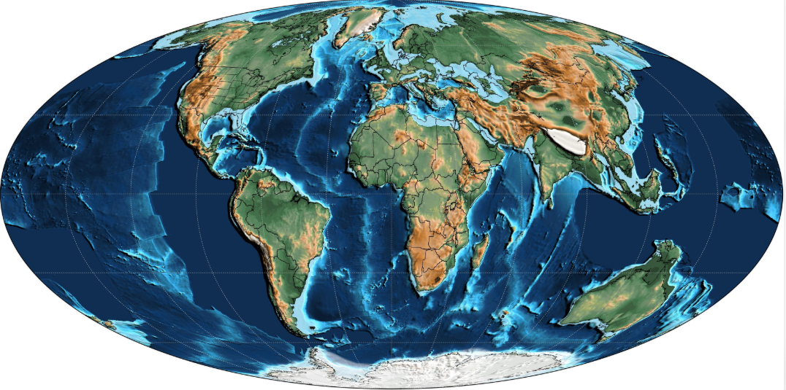

Un mundo después de la extinción
Hace aproximadamente 66 millones de años, una extinción masiva puso fin al Cretácico y acabó con los dinosaurios no avianos y numerosos otros organismos. Comenzó entonces el Paleógeno, primer periodo de la era Cenozoica.
Los ecosistemas experimentaron una profunda reorganización. Muchos grupos de mamíferos y aves se diversificaron y ocuparon ambientes que habían cambiado tras la extinción. Al mismo tiempo, las plantas continuaron evolucionando y las placas tectónicas modificaron lentamente la geografía de la Tierra.
El Paleoceno: la recuperación de la vida
Entre hace 66 y 56 millones de años, los ecosistemas se recuperaron gradualmente de la extinción del final del Cretácico. Los mamíferos aumentaron su diversidad y aparecieron numerosas formas de herbívoros y carnívoros. Muchos todavía eran relativamente pequeños, aunque algunos grupos desarrollaron tamaños mayores.
Las aves también se diversificaron, mientras los reptiles, los insectos y las plantas continuaron formando parte esencial de los ecosistemas terrestres y acuáticos.
El Eoceno: un planeta cálido
Entre hace 56 y 33,9 millones de años, la Tierra atravesó una etapa especialmente cálida. Durante el inicio del Eoceno se produjo un episodio de calentamiento global intenso conocido como el Máximo Térmico del Paleoceno-Eoceno. Posteriormente, el clima comenzó una tendencia general hacia condiciones más frías.
Durante el Eoceno evolucionaron numerosos grupos de mamíferos relacionados con los actuales. Los primeros cetáceos surgieron de antepasados terrestres y se adaptaron progresivamente a la vida acuática. También existían antepasados de caballos, primates, murciélagos y otros mamíferos modernos.
El Oligoceno: enfriamiento y nuevos paisajes
Entre hace 33,9 y 23 millones de años, el clima global continuó enfriándose. Alrededor de hace 34 millones de años, en la transición entre el Eoceno y el Oligoceno, se expandieron grandes capas de hielo sobre la Antártida.
Las variaciones climáticas modificaron la distribución de bosques y otros ambientes. Algunos mamíferos desarrollaron adaptaciones para vivir en condiciones más estacionales, y diferentes grupos continuaron diversificándose.
Los continentes siguen cambiando
Durante el Paleógeno, los continentes continuaron su desplazamiento. India colisionó progresivamente con Asia, contribuyendo a la elevación de la región del Himalaya y de la meseta tibetana. África se acercó a Eurasia, mientras que Australia siguió separándose de la Antártida.
América del Sur y la Antártida también experimentaron cambios en sus conexiones y en los pasos oceánicos que las rodeaban. Estas transformaciones influyeron en la circulación marina y en la evolución de los ecosistemas.
La vida se aproxima al mundo moderno
A lo largo del Paleógeno se establecieron numerosos grupos de mamíferos y aves que formarían parte de los ecosistemas posteriores. Sin embargo, la fauna y la flora todavía diferían considerablemente de las actuales, y muchos paisajes estaban dominados por bosques en regiones que hoy tienen climas distintos.
El final del Paleógeno no significó que la Tierra hubiera terminado de adquirir su forma moderna. Los continentes continuaron desplazándose y el clima siguió cambiando durante el Neógeno y el Cuaternario.